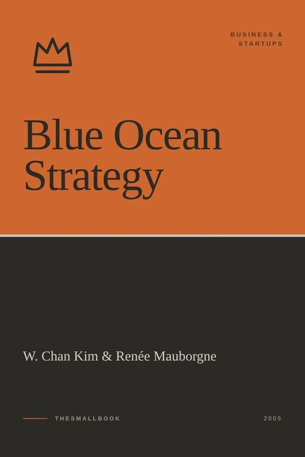

Why Did Colgate Kitchen Entrees Fail?
The Toothpaste Company Sold Frozen Dinners
What happened
In the early 80s Colgate-Palmolive tested a line of frozen entrees, reasoning that its housewife-focused brand could stretch to the supermarket freezer. The market never gave it a chance to succeed or fail properly: shoppers could not separate 'Colgate' from mint and toothpaste, and 'Colgate lasagna' became a marketing horror story told in classrooms ever since. The line was dropped without a trace.
The fatal mistake
Treating a brand as a permission slip - the name that opens the freezer door also carries the taste of toothpaste into it.
The lesson
Brands live in senses and habits, not in corporate charts. Stretch a brand only where the promise still works; where it doesn't, the parent pays the tax.
The antidote book

Stop fighting sharks in bloody red oceans. Create a blue one - where the rules are yours and the competition doesn't exist yet.
READ THE SUMMARY OPEN INTERACTIVE BOOKQuestions people ask about Colgate Kitchen Entrees
Why did Colgate Kitchen Entrees fail? Treating a brand as a permission slip - the name that opens the freezer door also carries the taste of toothpaste into it.
How much was lost? The extension died quietly; the joke outlived the product by forty years
What is the lesson? Brands live in senses and habits, not in corporate charts. Stretch a brand only where the promise still works; where it doesn't, the parent pays the tax.
Colgate Kitchen Entrees kyun fail hua? In simple English: Treating a brand as a permission slip - the name that opens the freezer door also carries the taste of toothpaste into it. The cost was The extension died quietly; the joke outlived the product by forty years.
Keep digging
More business failures · Open the full Graveyard
Read the antidote book summary: Blue Ocean Strategy
Related failures
- Why did Skype fail? 2025 · The Verb That Lost a Pandemic It Should Have Owned
- Why did JOANN fail? 2025 · The Craft Shelf Lost Its Footing
- Why did rue21 fail? 2024 · Three Bankruptcies Were the Market's Answer
- Why did Zee-Sony Merger fail? 2024 · A $10B Media Titan Blown Apart by Promoter Egos
- Why did Tupperware fail? 2024 · The Party Ended After 78 Years
- Why did The Body Shop fail? 2024 · The Ethical Beauty Pioneer That Couldn't Outlive Its Founder's Shadow
Questions people ask about Colgate Kitchen Entrees
Why did Colgate Kitchen Entrees fail? Treating a brand as a permission slip - the name that opens the freezer door also carries the taste of toothpaste into it.
How much was lost? The extension died quietly; the joke outlived the product by forty years
What is the lesson? Brands live in senses and habits, not in corporate charts. Stretch a brand only where the promise still works; where it doesn't, the parent pays the tax.
Colgate Kitchen Entrees kyun fail hua? In simple English: Treating a brand as a permission slip - the name that opens the freezer door also carries the taste of toothpaste into it. The cost was The extension died quietly; the joke outlived the product by forty years.
Keep digging
More business failures · Open the full Graveyard
Read the antidote book summary: Blue Ocean Strategy
Related failures
- Why did Skype fail? 2025 · The Verb That Lost a Pandemic It Should Have Owned
- Why did JOANN fail? 2025 · The Craft Shelf Lost Its Footing
- Why did rue21 fail? 2024 · Three Bankruptcies Were the Market's Answer
- Why did Zee-Sony Merger fail? 2024 · A $10B Media Titan Blown Apart by Promoter Egos
- Why did Tupperware fail? 2024 · The Party Ended After 78 Years
- Why did The Body Shop fail? 2024 · The Ethical Beauty Pioneer That Couldn't Outlive Its Founder's Shadow
They paid full price. You get the lesson in simple English.